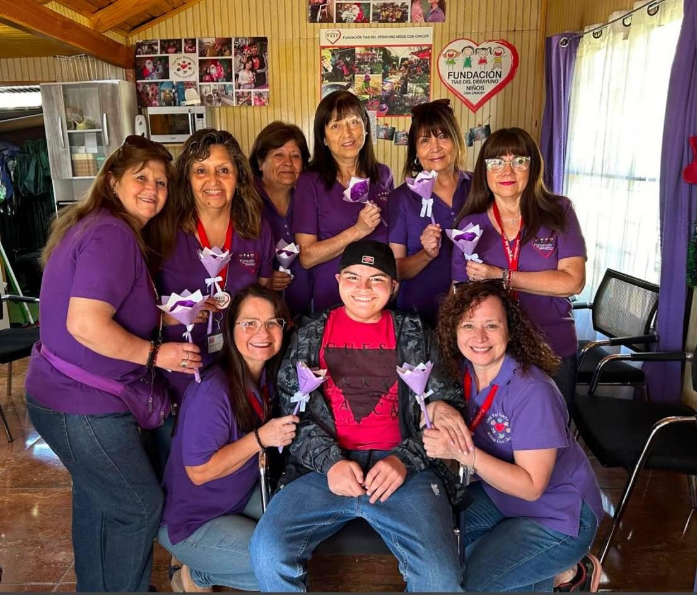

Fundación 100% voluntaria
Cada aporte es una nueva oportunidad de vida
Actualmente, somos 14 voluntarias comprometidas con acompañar a niños y niñas con cáncer, entregándoles cariño, contención y momentos de alegría.

Sobre nosotras
Somos una fundación 100% voluntaria.
“Las Tías del Desayuno” nació el 2007 a partir de una visita al hospital, donde seis apoderados conocimos de cerca las necesidades de los niños y sus familias. Comenzamos llevando desayunos y colaciones a los pasillos, buscando entregar no solo alimentos, sino también compañía y momentos de alegría.
Con el tiempo, nuestro pequeño gesto fue creciendo y comenzamos a organizar actividades, paseos y celebraciones como el Día del Niño y Navidad, siempre con el mismo propósito: “que los niños puedan jugar, sonreír y sentirse niños, incluso durante momentos difíciles”.
♡ Apóyanos hoyConócenos
Acompañar a niños hospitalizados y sus familias para que puedan seguir siendo niños: jugar, reír y disfrutar incluso en medio de la enfermedad y sus tratamientos.
Somos una fundación dedicada a acompañar, apoyar y brindar momentos de alegría y entretención a niños y niñas con cáncer, así como a sus familias, durante el proceso de su enfermedad. A través de la contención, el amor, la esperanza y diversas actividades solidarias y recreativas, buscamos contribuir a su bienestar integral, procurando que la enfermedad no defina su infancia y que siempre exista espacio para jugar, sonreír y disfrutar de ser niños.
Ser una fundación referente en el acompañamiento humano de niños y niñas con cáncer y sus familias, contribuyendo a transformar los espacios hospitalarios en lugares más cálidos y acogedores, donde la alegría, el cariño y la esperanza estén presentes, y donde cada niño pueda seguir viviendo su infancia más allá de su enfermedad.
Qué hacemos
Entregamos desayunos a niños y sus familias, siendo esta la base y el origen de nuestro voluntariado.
Brindamos compañía, apoyo y contención a niños y sus familias durante procesos de etapa terminal.
Acompañamos a niños y familias que requieren apoyo fuera del hospital.
Ofrecemos Reiki, regeneración celular y acupuntura como terapias complementarias.
Entregamos espacios de relajación y bienestar para madres y acompañantes durante su permanencia en el hospital.
Acompañamos a niños que permanecen largos períodos hospitalizados, especialmente aquellos en situaciones de vulnerabilidad social, económica o familiar.
Actividades o eventos anuales
El calendario de fechas especiales y los espacios de contención emocional, así llevamos alegría y apoyo a niños y familias.
Trabajos colaborativos
Conoce algunas de las iniciativas que mejoran la experiencia de los niños y sus familias.
Sueños cumplidos
A continuación, les compartimos algunos de los sueños que hemos tenido la alegría de cumplir. Sueños que, aunque a muchos les parezcan pequeños, para estos niños significan momentos de alegría, ilusión y recuerdos que quedarán para siempre.
Voluntariado
Contamos también con un grupo muy especial de voluntarios que hoy forman parte de nuestro staff. Son jóvenes que en el pasado fueron pacientes oncológicos y que, tras finalizar sus tratamientos y recibir el alta, decidieron regresar para seguir siendo parte de nuestra comunidad, pero esta vez desde otro lugar: ayudando y acompañando a otros niños y familias.
Muchos de ellos alguna vez participaron de nuestras fiestas de Navidad y recibieron de nosotros momentos de alegría y cariño. Hoy son ellos quienes trabajan y colaboran para hacer posible estas celebraciones, entregando a otros niños la misma alegría que alguna vez recibieron.
Para nosotros es especialmente significativo ver cómo quienes un día estuvieron del otro lado, hoy vuelven para ayudar a construir estos momentos y mantener vivo el espíritu de solidaridad y acompañamiento que nos ayuda a crecer como comunidad.
Ubicación
Operamos históricamente brindando asistencia en el Hospital Sótero del Río, realizando diversas actividades para los niños y familias.
Av. Concha y Toro N° 3459, Hospital Sótero del Río.
Lunes, miércoles y viernes.
9:00 am – 12:30 pm.
Donar ahora
Cada aporte, por pequeño que parezca, puede convertirse en una sonrisa, un momento de alegría o una oportunidad para hacer realidad uno de sus sueños. Tu generosidad nos permite seguir acompañando a los niños y sus familias, entregándoles momentos que les recuerden que no están solos.
Toca un dato para copiarlo.
Gracias a todas las personas, familias y colaboradores que han confiado en nuestra labor y nos han acompañado en este camino. Cada aporte, cada muestra de cariño y cada gesto de apoyo nos impulsan a seguir creciendo y llegando a más niños.